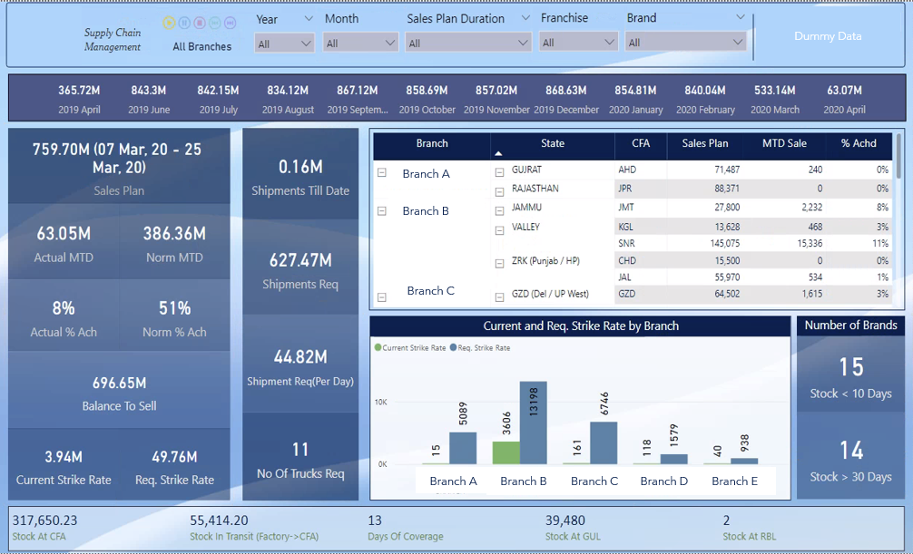

The Project provided visibility to the month-on-month change of aged inventory for the last 8 months
and showed the detailed change for the last 2 months. I used Simple Waterfall custom visual from PBI Marketplace since the native waterfall chart could not be
used because it lacked customization features. One of the features of the custom chart was defining pillars, which helped me define customised pillars as per
the need of the visual. I split the data into multiple tables by using the Summarize DAX function and combined them using the Union
DAX function as the final table.


I created a complex matrix visual where I sorted the classification date/time field using a custom sorting rule,
which starts at 7 AM and ends at 6 AM the next day and register different safety events that happened in the
morning shift and night shift. I used Matrix Visual and created a calculated measure for sorting the visual as per the rule. I created
calculated columns for hours and minutes and added a drill down to minutes for each hour of the day.

The Project provided a Month-To-Date branch-wise analysis of stock sold vs sales plan to determine Carry
forward agent achievement and determine demand and days of coverage at the branch level and factory level
Since the dashboard was used by executives and was displayed on the TV in real-time, I used Play
Axis custom visual from PBI Marketplace to refresh the dashboard every 5000ms and display all the branches
one by one
Used Power Query to connect to Impala, shape the data, and add conditional columns

The key analysis in this dashboard is to track brand performance in the Ophthalmology market by comparing it
with the competitors based on Sales, Market Share, Growth% and Evolution Index.
The dashboard can be viewed both for Value and Volume level KPIs and can also be viewed at Moving annual
Total and Quarterly time frames. The dashboard can also be filtered according to different geography.
I created multiple calculated fields to display the data in the dashboard and used LOD (Level of Details)
wherever required.
This is a multiple sheet dashboard and can be viewed by selecting navigation buttons on the top right corner

The key analysis in this dashboard is to track sales erosion for molecules due to entry of Generic Medicine in
the market. The dashboard is used for analysis of the impact of parent company vs it’s competitors based on
Sales, Market Share, Growth% and Sales Contribution etc.
I created advanced interactive visualization using excel formula and ActiveX control features such as List box,
Check box, command button etc.